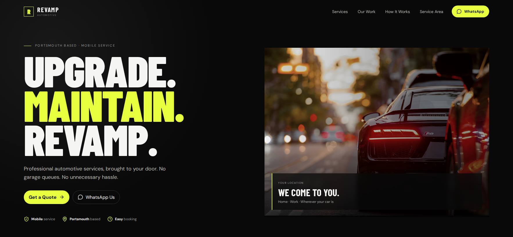

04 · AUTOMOTIVE / LOCAL SERVICE
Revamp Automotive — make a mobile service easy to understand and trust.
A local-service concept built around clear services, strong visual identity and direct customer action.

THE APPROACH
Clarity first. Action second.
For a mobile automotive service, the website needs to answer the basics quickly: what is offered, where the service operates, why customers should trust it and how to enquire.
WHAT WE BUILT- Service-led information architecture
- Strong local-service positioning
- Clear enquiry calls to action
- Responsive visual system
HTML / CSSJavaScriptLocal UX
Portfolio project. No lead, revenue or ranking claims are made without verified data.